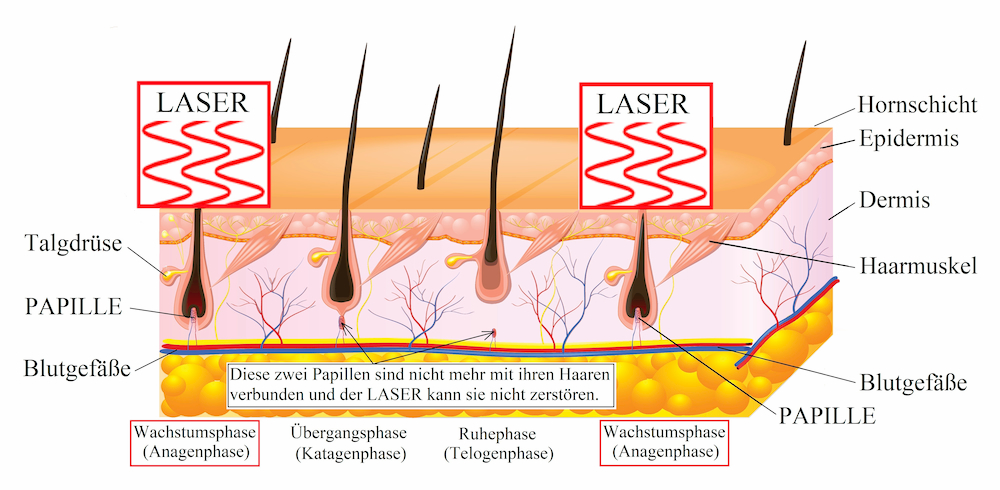

Liebe Kundinnen, Liebe Kunden,
Hier finden Sie meine Angebote.
Ich freue mich auf Ihren Anruf, Ihre WhatsApp Nachricht, E-Mail... und natürlich auf Ihren Besuch!
☎ 07422-567820, ✆ 0176-62157680
Preise gelten seit Oktober 2022
Profi-Hautanalyse
Mit dem Skin-Analyser
(eines der modernsten und besten Geräte auf dem Markt)
mit Alterssimulation 5-7 Jahre in die Zukunft und
ausführliche Besprechung der Ergebnisse und Handlungsempfehlungen
Beispiel einer Handlungsempfehlung:
- Empfindliche Epidermis: Hydra-Face
- Poren und noch nicht sichtbare Pigmentflecken (UV-Spots): Gold Microneedling mit Radiofrequenz
- Falten: Ein Ultraschall-Face-Lifting ist möglich
- Porphyrine (Talg und Fett): Hier ist alles gut
Je kleiner der Stern, desto besser ist das Ergebnis.
Unbedingt Sonnenschutz für Gesicht und Dekolleté.
Teslimes Kommentar:
Sorgen machen mir die unter der Haut liegenden, noch nicht sichtbaren Pigmentflecken (UV-Spots), die aber in den nächsten Jahren sichtbar werden. Daher ist sofortiges Handeln und richtiges Pflegen der Haut nötig.Gesichtsbehandlungen
Grundprogramm für gesunde Haut
Hydra-Face
Teslimes Hollywoodbehandlung in drei Schritten:
(1) Hautanalyse + (2) Behandlung + (3) Glow-Effekt
Empfohlen für: für jedes Alter
Ausfallzeiten: Keine
Teslimes Kommentar:
Regelmäßige Anwendung, alle 6-8 Wochen, führt zu einer dauerhaft strahlenden und gesunden Haut und verlangsamt den Alterungsprozess der Haut erheblich. Es ist die perfekte Gesichtspflege für jedes Alter. Mit dem Hautanalysegerät dokumentiere ich jedes Mal den Zustand der Haut.Hydra-Face-Luxusbehandlung
Schritt 1:
- Aufnahme des Hautzustandes mit dem professionellen Hautanalysegerät, mit Alterssimulation 5-7 Jahre in die Zukunft
Schritt 2: (auf Sie abgestimmt)
- Hydra-Reinigung, Hydra/Diamant-Dermabrasion, Peeling, ggfs. Bedampfung, Skin-Skrubber, Reinigung mit Vakuumhandstücken, Sauerstoffpistole
- Hyaluron + Wirkstoffkomplex
- Bipolare und tripolare Radiofrequenz Behandlung
- Mikrostrom-Handschuh
- PDT-Lichttherapie
- Abschlusspflege /-massage
Schritt 3 = Ergebnis:
- Glow-Effekt: saubere + strahlende Haut für mehrere Wochen
Hydra-Face-Basis
Ablauf:
- Hydra-Reinigung, Hydra/Diamant-Dermabrasion, Peeling, ggfs. Bedampfung, Skin-Skrubber, Reinigung mit Vakuumhandstücken, Sauerstoffpistole
- Hyaluron + Wirkstoffkomplex
- Bipolare und tripolare Radiofrequenz Behandlung
- PDT-Lichttherapie
- Abschlusspflege /-massage
Ergebnisbeispiel:

Klassische Kosmetikbehandlung


Hals-/Gesicht-und Dekolletébehandlung mit individuell auf Ihre Haut abgestimmten Spezialprodukten, inkl. Wirkstoffampulle und Augenpackung/-maske.
- Nackenmassage
- Reinigungsmassage
- Hautanalyse
- Intensivpeeling
- Bedampfung
- Behandlung von Hautunreinheiten
- Augenbrauenkorrektur
- Wirkstoffampulle oder Serum
- Gesichts-Hals-Dekolletémassage
- Packung/Maske
- Abschlusspflege
Intensiv-Gesichtsreinigung
- Reinigungsmassage
- Intensivpeeling
- Bedampfung
- Behandlung von Hautunreinheiten
- Ampulle
- Abschlusspflege
Narben/Akne-Narben, großpoorige Haut
Gold-Microneedling mit RF
Starkes Duo: Microneedling plus Radiofrequenz
Empfohlen für: für jedes Alter
Ausfallzeiten: Keine
Indikationen
- Hautverjüngung/Hautstraffung von außen und von innen
- Aknenarben, sonstige Narben
- großporige Haut
- Pigmentflecken
- Augenringe
- Falten
- übermäßiges Schwitzen im Achselbereich
- Dehnungsstreifen, OP-Narben
- Ergebnis nach ca. 2 Monaten voll sichtbar
- Wirkungsdauer: ca. 2 Jahre und länger
Gesicht komplett
Hals
Dekolleté
Gesicht + Hals
Gesicht + Hals + Dekolleté
Achseln (gegen Schwitzen)
Dehnungsstreifen
- eine 3-er Kur, alle 6 Wochen bringt die besten Ergebnisse
- Kurpreis: dritte Behandlung zum halben Preis
Micro Needling
Das natürliche Face-Lift ohne OP
Das Micro Needling mittels Needling Pen ist ein neues und
sehr erfolgreiches Verfahren im Bereich der Anti-Aging- und
Problemhaut-Behandlungen. Durch die gezielte Perforation der Haut
(Needling Pen mit 24 feinen Nadeln), setzen die Zellen unmittelbar
nach der Anwendung Wachstumsfaktoren frei, welche die Produktion
von Kollagen und Elastin und die Ausschüttung von Hyaluronsäure
stimulieren.
Die Aufnahmefähigkeit der aufgetragenen Wirkstoffe
wird erheblich gesteigert, was zu einem deutlich verbesserten
Hautergebnis führt. Anwendungsbereiche:
Gesicht, Augen, Lippen, Hals, Dekolleté, Körper und Hände.
Sensationelle Ergebnisse im Bereich:
- Hautfestigung
- Faltenreduktion
- Hautverjüngung von sonnengeschädigter Haut
- Narben verschiedener Art (besonders Aknenarben)
- Dehnungs- und Schwangerschaftsstreifen
- Aufhellung von Pigmentstörungen
- Porenverkleinerung und Verfeinerung des Hautbildes
Es wird eine Kurbehandlung von 4-6 Behandlungen in 4-wöchigen Abständen empfohlen
Fruchtsäurepeeling
Bei vielen Hautleiden kommt es zu einer übermäßigen Anhäufung toter Hautzellen, so dass die Haut dick wird und ihren Glanz verliert. Mit Hilfe von Fruchtsäuren lassen sich die auf der Hautoberfläche liegenden Hautzellschichten ablösen und entfernen. Auf diese Weise wird die Schicht der Hornzellen dünner und es kommt zu einer fortlaufenden Verbesserung des Aussehens und der Beschaffenheit der Haut. Anwendung unter Einschleusung von Hyaluronsäure bei:
- Akne (jugendliche/erwachsene Haut)
- offene und geschlossene Komedonen (Mitesser)
- unreine und grobporige Haut
- reife Haut, erschlaffte Haut, Fältchen, Pigmentflecken
- lichtgeschädigte Haut
- stumpfe, glanzlose und raue Haut
Diamant-Mikrodermabrasion
Das Geheimnis der Stars
Kontrolliertes Abtragen von Verhornungen, Anregung der Zellteilung
und Verfeinerung des Hautbildes, Minderung von Falten, Aufhellen von
Pigment- und Altersflecken, Verbesserung von Narben, Behandlung von
großporiger und unreiner Haut, selbst für empfindliche Haut geeignet.
Auch hier wird hochdosierte Hyaluronsäure mit Ultraschall eingeschleust.
- Akne (jugendliche/erwachsene Haut)
- offene und geschlossene Komedonen (Mitesser)
- unreine und grobporige Haut
- reife Haut, erschlaffte Haut, Fältchen, Pigmentflecken
- lichtgeschädigte Haut
- stumpfe, glanzlose und raue Haut
strahlende Augen
Wimpernlifting
Ausdrucksvoller Blick für ca. 6-8 Wochen. Dauerhafter Schwung
und natürliche Betonung auch bei kurzen Wimpern
Empfohlen für: jedes Alter
Wimpern färben
Augenbrauen neu formen
Augenbrauen korrigieren
Augenbrauen färben
Haarentfernung
Haarentfernung mit Wachs
Oberlippe oder Kinn
Oberlippe oder Kinn, während einer Behandlung
Gesicht komplett
Gesicht komplett, während einer Behandlung
Beine bis Knie
Beine komplett
Achseln
Bikinizone (nur Damen)
Rücken oder Brust
dauerhafte Haarentfernung
mit Dioden-Laser
Nahezu schmerzfrei. Der LASER wird für jeden Kunden und Körperbereich individuell eingestellt.
Im Normalfall sind 4-8 Behandlungen notwendig, alle 4-6 Wochen.
Einzelbehandlungen
Oberlippe oder Kinn oder Wangen
Hals oder Nacken
Achseln
Bikinizone oder Intimzone (nur Damen)
Unterarme oder Oberarme
Rücken, oberer oder unterer Bereich
Brust oder Bauch
Beine Unterschenkel
Beine Oberschenkel
Ermässigung im kleinen Paket
Gesicht komplett
Arme komplett
Rücken komplett
Brust + Bauch komplett
Beine komplett
Bikinizone + Intimzone (nur Damen)
Ermässigung im großen Paket
Achseln,
Bikinizone + Intimzone (nur Damen),
Beine Unterschenkel
Achseln,
Bikinizone + Intimzone (nur Damen),
Beine komplett
mindestens drei Einzelbehandlungen
von jeweils 50 € und mehr,
nach eigener Wahl
Die drei Phasen des Haarwachstums (Haarzyklus)
Trotz modernster Technik sind mehrere Behandlungen nötig???Je nach Körperregion befinden sich 20-30% der Haare in der Anagenphase die mit der Papille verbunden sind und nur diese kann der LASER entfernen. Beim nächsten Termin sind andere Haare in dieser Phase, dann werden auch diese entfernt. Daher sind mehrere Termine nötig.
Verhalten vor und nach der LASER-Behandlung
- ca. 4 Wochen vor den Behandlungen keine Haare zupfen oder mit Wachs bzw. Zuckerpaste entfernen (Rasieren ist erlaubt, bitte einen Tag vorher rasieren),
- ca. 4 Wochen vor und nach den Behandlungen kein intensives Sonnenbad (bzw. Schutzkreme mit Faktor 50 benutzen) und kein Solarium,
- ca. 24 h nach den Behandlungen keine Vollbäder, Sauna, Chlorwasser (Schwimmbad) oder Sport
Massagen
Klassisch/Wellness

Wirkung: Entspannung der Muskulatur, lokale Verbesserung der Durchblutung, Senkung des Blutdrucks und des Pulses, Verbesserung des Zellstoffwechsels, Stressabbau, psychische Entspannung u.a.
Klassiche Körpermassageca. 60 min
Rückenmassage inkl. Arme und Händeca. 30 min
Hot Stone Massageca. 60 min
Ayurvedische Genzkörpermassageca. 60 min
Lomi Lomi Massageca. 60 min
Fussreflexzonenmassage
(nach Hanne Marquardt)- Beschwerden lindern
- Selbstheilungskräfte anregen
- Verbesserung der Durchblutung und des peripheren Lymphabflusses
Maniküre
Maniküre-klassisch
Beurteilung der Haut & Nägel
Naturnägel formen
Nagelbad
Nagelhautpflege
Abschlusscreme
Nägel lackieren
Shellac
Der Nagellack der StarsAuftragbar wie Nagellack, haltbar wie Gel, mind. 14 Tage haltbar, kein Abblättern, absolut kratzfester, widerstandsfähiger UV-gehärteter Hochglanz. Keine Trocknungszeit erforderlich.
Maniküre + SHELLAC-Lackierung
SHELLAC-Lackierung
Bereich Fusspflege
Medizinische Fachfußpflege
(auch für Diabetiker)
Aromafußbad
Nägel schneiden, Nägelverschönerung
Hornhaut entfernen/abschleifen
ggfs. Hühneraugen entfernen, ein Hühnerauge inkl.
ggfs. Pilznägel abschleifen
ggfs. eingewachsene Nägel oder Rollnägel behandeln
komplette Fachfußpflege
ca. 45 min
Hühneraugen entfernen , zwei und mehr
Fußreflexzonenmassage,
nach Hanne Marquardtca. 30 min
Relax-/Wellnessfußmassageca. 15 min
Nägel lackieren
* Entfernung einer früheren SHELLAC-Lackierung: 10 €
Nagelpilz-Behandlung
Nagelpilzbehandlung mit dem PACT-MED-Phototherapie-Strahler, schmerzfrei und ohne Nebenwirkungen.
Behandlungsablauf:
-
In der Praxis:
Die pilzbefallenen Nagelteile werden abgefräst und ein Spezialgel wird aufgetragen. Nach einer Einwirkzeit von 10
Minuten erfolgt die photodynamische Pilz-/Keimabtötung mit dem PACT-Strahler. Mindestens 1 Mal pro Woche,
mind. 4 Mal hintereinander, je nach Schwere des Pilzbefalls.
Zu Hause: Sie müssen zu Hause unterstützend, diszipliniert mithelfen und zusätzlich antimykotische Mittel auf die befallenen Nägel und umliegende Haut auftragen, Socken und Schuhe desinfizieren und noch mehr. Sie erhalten von uns alle Mittel sowie ein Blatt mit einer ausführlichen Anleitung.
Ergebnis: Der Nagel sollte nach und nach gesund nachwachsen. Trotzdem ist das Ergebnis sehr individuell, ein Wiederanstecken ist möglich. Krankheiten wie Diabetes mellitus, Durchblutungsstörungen, Entzündungen der Nägel und besonders Immunschwäche, erhöhen die Infektionsgefahr. Die Heilung vom Nagelpilz kann nicht garantiert werden.

Nagelkorrektur mit Spangentechnik
Bei schmerzhaft eingewachsenen/eingerollten Nägeln.- Bei schmerzhaft eingewachsenen/eingerollten Nägeln verwenden wir Spangen zum Aufkleben. Die Spange zieht die Nagelränder sanft hoch, der Nagel wächst dann weniger gekrümmt heraus und nach ca. 4-6 Wochen wird die Spange erneuert. Nach ein paar Monaten hat der Nagel eine normale Wölbung. (siehe Fotos)
Eure Teslime